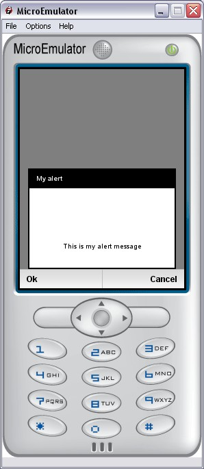
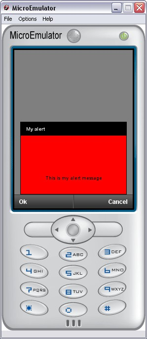

Warning:
This tutorial covers only Mobile Widgets versions.
Tiny Mobile Widgets don't support CSS..
CSS is used to define (or modify) the application style.
More information about CSS language:
http://en.wikipedia.org/wiki/CSS.
The Style API uses CSS files to change the appearance of Protypes.
To insert CSS file in scene, use the Style node.
Note:
default.css is the default style sheet.
It is recommended to include it whenever if you use Mobile Widgets prototypes.
See Style node documentation for more information about this node.
Example of style sheet:
This example redefine the background color and the border size of Alert prototype.
|  |
 |
| Alert prototype with default.css file. | Alert prototype with the previous custom CSS file. |
Attributes following the standard CSS format:
Attributes added to standard CSS format to ease the VRML development:
Colors can be defined by a:
Note:
The attribute background-color can take the value transparent.
Some of the previous attributes should take non-trivial values. Here is a list of the authorized values:
By convention, a CSS file should sit in its own style directory:
"MyProject/styles/MyStyle/mystyle.css".
Where MyStyle is the style defined in the project settings with property
"style" and mystyle.css should be referenced by the Style node in your
main scene.
A default CSS file is already included in the SDK to handle default values that
you can override in your own CSS file.
This file is named "default.css" and should always be included as the first CSS
file in the Style node.
You can define the style folder via the app.properties file.
In app.properties file, change the style property by your style.
Example:
style=MyPersonalStyle : Path to CSS files is MyProject/styles/MyPersonalStyle
Warning:
If your are developing a widget (not a standalone Memo
application), your should not include "default.css" as it is already handled by
the Mobile Widgets application.
Light mode allows you to make lighter widgets (memory, processor, ...).
Light mode is only accessible for Mobile Widgets (not for Tiny Mobile Widgets).
This mode is used by Mobile Widgets prototypes to remove some pictures and animations.
We add a CSS node named "Common", light is an attribute of this CSS node and is
global to one application (per style).
In CSS we have :